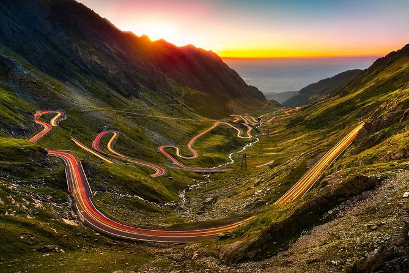
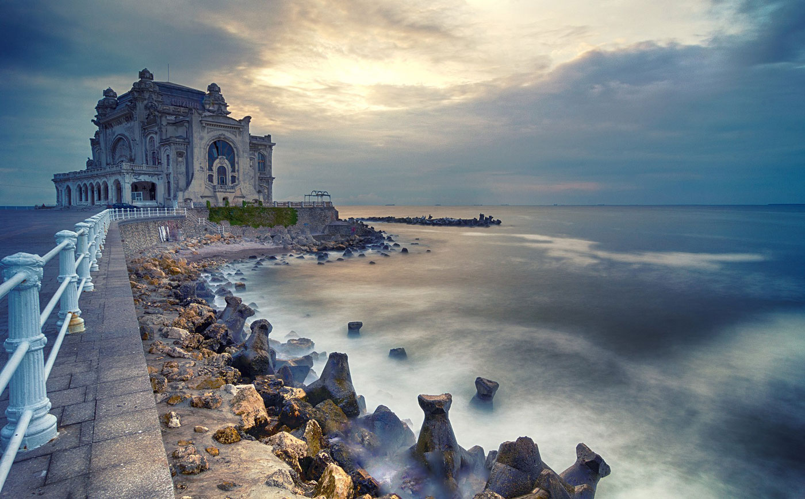

My Romania and myself
Why Visit Romania?

Romania offers a diverse and enriching experience for travelers. Explore medieval castles, vibrant cities, and picturesque landscapes. Indulge in delicious cuisine, embrace cultural traditions, and witness the country's fascinating history. From the Carpathian Mountains to the Black Sea coast, Romania captivates with its authenticity, warmth, and a unique blend of old-world charm and modern vibrancy.
Geography and climate

Romania is a country located in Southeastern Europe, bordering Bulgaria to the south, Serbia to the southwest, Hungary to the west, Ukraine to the north, and Moldova to the east. It also has a coastline along the Black Sea to the southeast.
History of Romania:
- Ancient Period: Romania's history includes Dacian and Roman influences.
- Medieval Period: Wallachia and Moldavia emerged as principalities.
- Ottoman Rule: Romania experienced Ottoman influence for centuries.
- Independence: Romania gained independence in 1877-1878.
- Communist Era: Communist rule ended with the 1989 revolution.
- Post-Communist Period: Romania joined the EU in 2007 and NATO in 2004.
Culture:

- Language: Romanian is the official language.
- Religion: Predominantly Eastern Orthodox.
- Folk Traditions: Rich in folk music, dance, and traditional celebrations.
- Literature and Arts: Notable writers and contributions to various art forms.
- Cuisine: Influenced by diverse cultures, with unique dishes.
- Literature and Arts: Notable writers and contributions to various art forms.
- Cuisine: Influenced by diverse cultures, with unique dishes.
In summary, Romania has a history shaped by ancient civilizations, medieval principalities, and modern transitions. Its culture is marked by diverse traditions, language, and contributions to arts and literature.
Government of Romania:
- Romania is a semi-presidential republic.
- Head of State: The President is elected by the people and serves a maximum of two five-year terms.
- Head of Government: The Prime Minister leads the government.
Economy of Romania:
- Romania has a developing market economy.
- Key Industries: Information Technology, Automotive, and Agriculture are significant sectors.
- Challenges: Corruption has been a challenge, and infrastructure development is a focus.
- International Relations: Romania is a member of the European Union and engages in international trade.
In summary, Romania has a semi-presidential republic government and a developing market economy with a focus on key industries. Challenges include corruption, and the country actively participates in international relations, particularly within the European Union.
Society and Demographics:
- Population: Romania has a diverse population of over 19 million people.
- Ethnic Groups: Predominantly Romanian, with significant Hungarian and Roma minorities.
- Language: Romanian is the official language.
- Religion: The majority follows Eastern Orthodoxy. Urbanization: Urban and rural communities coexist, with major cities like Bucharest.
- Education: Romania has a well-established education system.
- Healthcare: A mix of public and private healthcare services.
Tourism and attractions:
Romania is a country with a rich cultural and natural heritage, offering a diverse range of attractions for tourists. Here are some notable tourism highlights and attractions in Romania:
Bucharest - The Capital: Palace of the Parliament:

One of the largest administrative buildings globally, a symbol of the communist era.
Transylvania: Bran Castle (Dracula's Castle):

A medieval fortress associated with the Dracula legend.
Sibiu:

A charming city with well-preserved medieval architecture, including the Council Tower and Brukenthal National Museum.
Cluj-Napoca:

A vibrant city with a mix of historical and modern attractions.
Painted Monasteries of Northern Moldova - Voroneț, Humor, and Moldovița Monasteries:

UNESCO World Heritage Sites known for their unique frescoes and vibrant colors.
The Carpathian Mountains - Transfăgărășan Highway:
A stunning mountain road offering breathtaking views and access to Balea Lake.
Retezat National Park:
A pristine natural reserve with diverse flora and fauna.
Black Sea Coast - Constanta:
A coastal city with Roman ruins, a vibrant seafront, and the Casino building.
Mamaia:

A popular resort with sandy beaches and a lively nightlife.
Maramureș - Wooden Churches of Maramureș:

UNESCO-listed wooden churches known for their unique architectural style.
Merry Cemetery (Cimitirul Vesel):
A colorful cemetery with elaborately carved and painted wooden crosses.
Danube Delta:

Unique Ecosystem: A UNESCO Biosphere Reserve, home to diverse wildlife and a paradise for birdwatching.
Sulina and Sfântu Gheorghe:
Delta towns offering access to the river's channels and wildlife.
Sighișoara - Medieval Citadel:

A well-preserved medieval citadel, birthplace of Vlad the Impaler.
Sinaia - Peleș Castle:
A stunning Neo-Renaissance castle surrounded by the Carpathian Mountains.
Turda Salt Mine:
An underground salt mine with chambers and tunnels.
Brasov: Black Church (Biserica Neagră):
A Gothic-style church in the heart of Brasov.
Rasnov Fortress:

A medieval fortress offering panoramic views of the surrounding area.
Romania's attractions span historical landmarks, natural wonders, and cultural treasures, making it a captivating destination for travelers. Whether you're interested in history, architecture, or the great outdoors, Romania has something to offer.